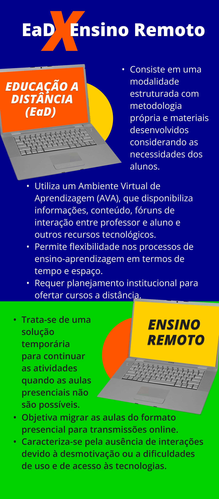

CAPÍTULO 4
#EPTparatodos
Educação a distância e ensino remoto têm diferenças?
Era quarta-feira, por volta das oito da manhã. O mês era fevereiro, já em seus últimos dias. O ano? 2020. Enquanto realizavam, em grupos, a atividade orientada sobre o texto , uma estudante comentou:
.png) Título: Quando a ameaça ainda parecia distante
Título: Quando a ameaça ainda parecia distante
Fonte: Prosa (2024).
Duas semanas depois, as aulas foram suspensas porque o coronavírus se espalhava pelo Brasil e as medidas para o distanciamento social começavam a ser adotadas.
Você se lembra onde estava e o que estava fazendo em março de 2020? Eu me lembro bem! Estava no período de transição para assumir a coordenação de um curso de licenciatura e, no grupo de WhatsApp, a equipe gestora da instituição discutia a interrupção das aulas por um período que, talvez, se prolongasse por uns três ou quatro meses. Assim que retornássemos, o calendário acadêmico seria reformulado e as aulas, repostas.

A continuidade dessa história para a educação formal você já conhece. As aulas de todos os níveis e modalidades educacionais foram suspensas ao redor do mundo para evitar aglomerações e, como alternativa emergencial, o ensino remoto foi viabilizado.
Embora seja comum ouvirmos pessoas dizendo que a educação no período pandêmico foi Educação a Distância (EaD), sabemos que essa ideia não é consenso.
Conforme conversamos no início desta Unidade Temática, a EaD é uma modalidade educacional cuja especificidade está em permitir processos de ensino-aprendizagem temporal e espacialmente flexíveis e mediados por tecnologias de informação e comunicação que, hoje, são predominantemente digitais.
Vale lembrar que há autores, como Veloso e Mill (2024), que defendem que o ensino remoto é uma das formas de se configurar a EaD, pois, essencialmente, ambos seriam processos de ensino-aprendizagem separados no tempo e/ou no espaço e mediados por tecnologias.
Por ser uma modalidade, a implementação da EaD demanda especificidades relativas à gestão acadêmico-pedagógica e administrativa e, nesse sentido, requer planejamento em nível organizacional, isto é, da instituição educacional que intenciona ofertar cursos a distância.
Se o ensino remoto também foi mediado por tecnologias digitais, por que não é EaD?
O argumento que podemos utilizar para dizer que o ensino remoto não é EaD é seu caráter emergencial, isto é, sua implantação como resposta à crise sanitária imposta pela disseminação do coronavírus. Nesse sentido, o ensino remoto não foi intencionalmente planejado para promover processos de ensino-aprendizagem com flexibilidade espaço-temporal. A maior parte das experiências implementadas pelas instituições de ensino, tanto públicas quanto privadas, em todos os níveis e modalidades educacionais, consistiu em transpor o modelo de aulas presenciais para aulas mediadas por tecnologias.
Assim, as aulas centraram-se na figura do professor que, por meio das lives, transmitiam, de modo síncrono, os conteúdos disciplinares aos estudantes, rompendo com o princípio da flexibilidade que caracteriza a EaD. Houve, ainda, experiências embasadas na distribuição de materiais e atividades impressas, no uso de ambientes virtuais de aprendizagem ou de aplicativos como o Whatsapp, na transmissão, pela TV ou pelo rádio, de aulas gravadas, entre outras.
O comum a todas essas formas de ensino remoto foi a quase ausência de interações devido às dificuldades de uso e de acesso às tecnologias por professores e estudantes ou pela desmotivação imposta pelas incertezas e medos daquele momento histórico.
Nossa conversa está fazendo sentido? Será que você está aí se lembrando desse período, seja como professor, estudante ou responsável por alguém que estudou na pandemia? Pois bem. Como podemos, então, definir o ensino remoto?

Título: Diferença entre Educação a Distância (EaD) e Ensino Remoto
Fonte: Prosa (2024).